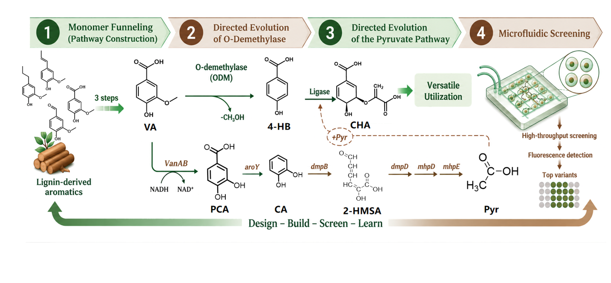
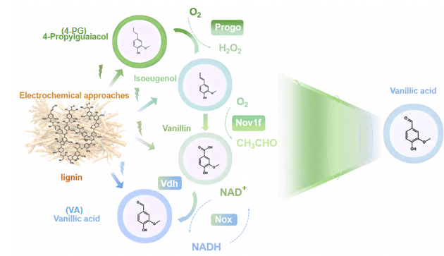
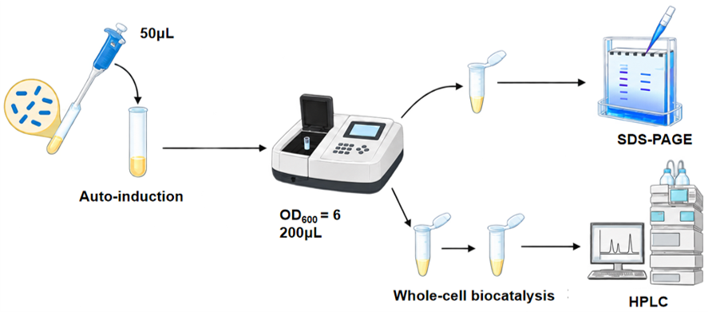
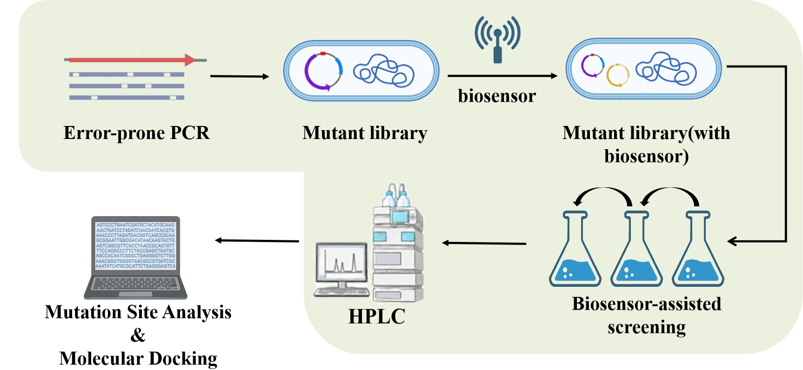
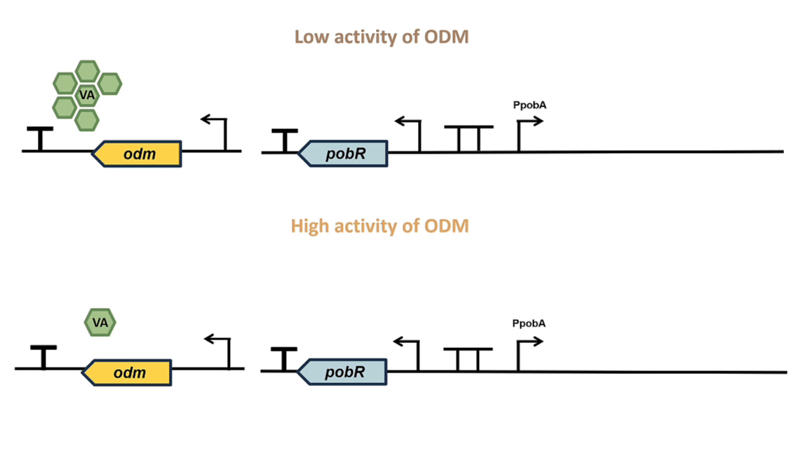
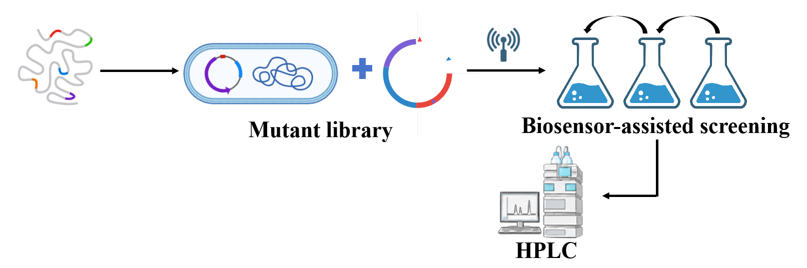

Overview
This project aims to construct an unnatural, fully green pathway for lignin valorization[1]. This pathway converts vanillic acid (VA), the funneled product of lignin depolymerization monomers, into the structurally similar high-value molecule chorismic acid (CHA)[2-4,5]. To fully utilize and convert diverse aromatic monomers produced by lignin depolymerization, we engineered a biological pathway to funnel all these monomers into VA[2-4]. For the transformation from VA to CHA, 4-hydroxybenzoic acid (4-HB) was chosen as the key intermediate, and its downstream conversion to CHA has been validated in our prior work. To address the low conversion yield of VA to 4-HB, we adopted directed evolution to boost enzyme activity, combined with a PobR-based biosensor for high-throughput mutant strain screening. To eliminate the reliance of the 4-HB-to-CHA transformation on exogenous pyruvate, we constructed a novel pathway for pyruvate biosynthesis from VA[1]. We deployed a biosensor in pyruvate synthesis-deficient hosts to monitor metabolic dynamics. Furthermore, we constructed an RBS mutant library to improve the conversion yield toward pyruvate, ultimately enabling robust endogenous pyruvate biosynthesis. We also aim to improve the screening efficiency of large-scale mutant libraries by incorporating a microfluidic screening platform as a hardware aid[6,7]. Collectively, this design aims to integrate pathway rewiring, enzyme engineering and high-throughput screening infrastructure to establish a complete bioconversion pipeline for lignin valorization.

Module 1: From Lignin to VA--The Starting Point
We select four abundant aromatic derivatives from electrochemical depolymerization of lignin: 4-propylguaiacol (4-PG), isoeugenol, vanillin, and vanillic acid[2-4]. To funnel these compounds into vanillic acid (VA), we construct a multi-enzyme cascade termed the monomer funnel module[2-4]. The upstream module plasmid BW-pYB1a-progo-nov1f co-expresses Progo and Nov1f for oxidative demethylation and side-chain modification of 4-PG toward vanillin; the downstream module plasmid BW-pRB1k-vdh-nox expresses Vdh for vanillin oxidation to VA and Nox for NAD⁺ regeneration.

We employ p15A-derived (ampicillin) and RSF-derived (kanamycin) vectors to ensure plasmid compatibility in E. coli BW25113. Following induction, protein expression is verified by SDS-PAGE prior to functional assays.
Each enzymatic step and the assembled cascade undergo whole-cell biocatalysis; products are quantified by HPLC. SDS-PAGE and HPLC together confirm correct protein expression and catalytic activity across all module components, providing a quantitative basis for throughput evaluation and pathway optimization.

Module 2: From VA to CHA--The Core Module
Part 1 Construction of high-throughput screening system for directed evolution of ODM
To construct an efficient non‑natural synthetic pathway for lignin valorization that converts lignin‑derived vanillic acid (VA) into 4-hydroxybenzoic acid (4‑HB) and further produces chorismic acid (CHA), we engineered ODM demethoxylase, the rate‑limiting enzyme of this pathway[5]. Accordingly, we established a biosensor‑assisted directed‑evolution system for high‑throughput mutant screening.
The experimental design is shown in the figure. We constructed the ODM mutant library via error‑prone PCR and co‑expressed ODM variants with the PobR‑based whole‑cell biosensor previously optimized in our lab to assemble a dual‑plasmid system. Candidate mutants were then enriched through biosensor‑based screening. Enzyme activity was quantified by HPLC, and positive mutants were further subjected to mutation‑site analysis and molecular docking.

Part 2 Working principle of the PobR biosensor
We constructed a biosensor based on this screening logic:High‑activity ODM catalyzes the conversion of VA into abundant 4‑HB. 4‑HB binds PobR, triggers its conformational change and releases PobR from the promoter to relieve transcriptional repression. The strain then expresses mCherry and cmr, generating fluorescence and acquiring chloramphenicol resistance, which enables high‑throughput screening for high‑activity ODM mutants.

Module 3: From VA to Pyr--Toward a Fully Green Route
Part 1 Biosensor Strain and Pathway Establishment
An E. coli BW‑derived biosensor strain BWΔgldAΔmaeBΔpykF was constructed as a growth‑coupled whole‑cell biosensor, in which three pyruvate‑synthesis‑related genes, gldA, maeB and pykF, were deleted. Deletion of these three endogenous genes renders the strain strictly dependent on exogenous pyruvate for cell growth. The vanillic‑acid‑to‑pyruvate enzymatic cascade containing vanAB, aroY and other genes was split into two plasmids and co‑transformed into the biosensor strain, coupling cell growth to pyruvate yield from the heterologous pathway.
Part 2 RBS Library Screening and Quantitative Validation
To improve pyruvate production, a random RBS mutation library was constructed for the downstream functional regions of the pathway to optimize protein translation. The biosensor was used for high‑throughput screening to obtain superior mutants. HPLC was adopted for quantitative evaluation of pyruvate‑producing capacity.

References
[1]Johnson, C. W. & Beckham, G. T. Aromatic catabolic pathway selection for optimal
production of Pyr and lactate from lignin. Metab. Eng. 28, 240-247 (2015). DOI:
https://doi.org/10.1016/j.ymben.2015.01.005
[2]Guo, Y., Alvigini, L., Trajkovic, M., et al. Structure- and computational-aided
engineering of an oxidase to produce isoeugenol from a lignin-derived compound. Nat.
Commun. 13, 7195 (2022). DOI: https://doi.org/10.1038/s41467-022-34912-3
[3]De Simone, M., Alvigini, L., Alonso-Cotchico, L., et al. Rationally guided improvement
of NOV1 dioxygenase for the conversion of lignin-derived isoeugenol to vanillin.
Biochemistry. 62, 419-428 (2023). DOI: https://doi.org/10.1021/acs.biochem.2c00168
[4]Xu, L., Sethupathy, S., Liang, Z., et al. NAD⁺ regeneration-coupled enzymatic
bioconversion of lignin-derived vanillin into VA: A cleaner production approach. Ind.
Crops Prod. 222, 119921 (2024). DOI: https://doi.org/10.1016/j.indcrop.2024.119921
[5]Stucki, A., Vallapurackal, J., Ward, T. R. & Dittrich, P. S. Droplet microfluidics
and directed evolution of enzymes: An intertwined journey. Angew. Chem. Int. Ed.
60, 24368-24387 (2021). DOI: https://doi.org/10.1002/anie.202016154
[6]Panwar, J., Autour, A. & Merten, C. A. Design and construction of a microfluidics
workstation for high-throughput multi-wavelength fluorescence and transmittance activated
droplet analysis and sorting. Nat. Protoc. 18, 1090-1136 (2023). DOI:
https://doi.org/10.1038/s41596-022-00796-2
[7]Shende, V. V., Bauman, K. D. & Moore, B. S. The shikimate pathway: Gateway to
metabolic diversity. Nat. Prod. Rep. 41, 604-648 (2024). DOI:
https://doi.org/10.1039/D3NP00037K